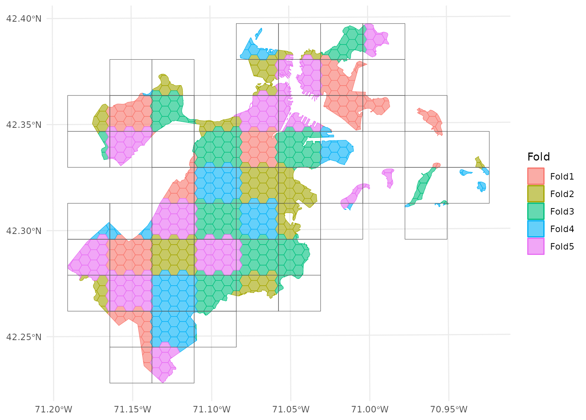
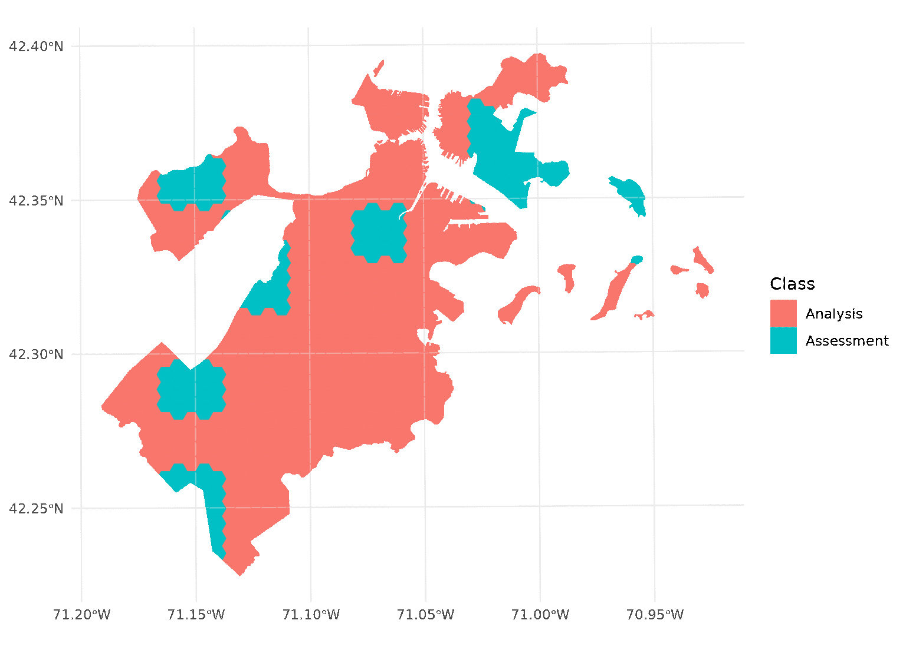
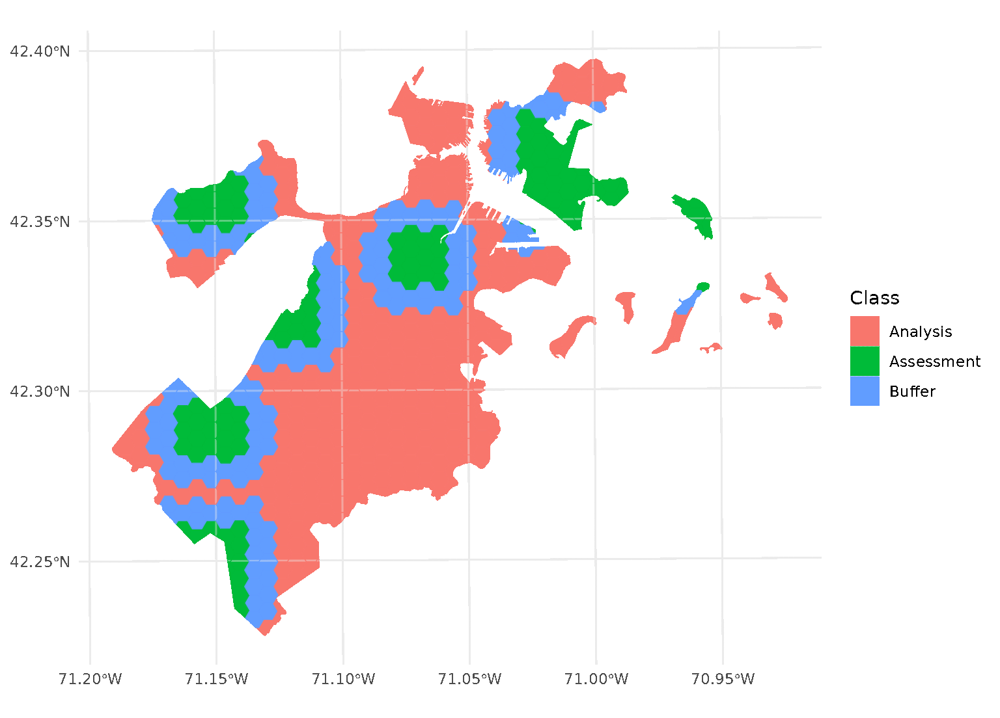
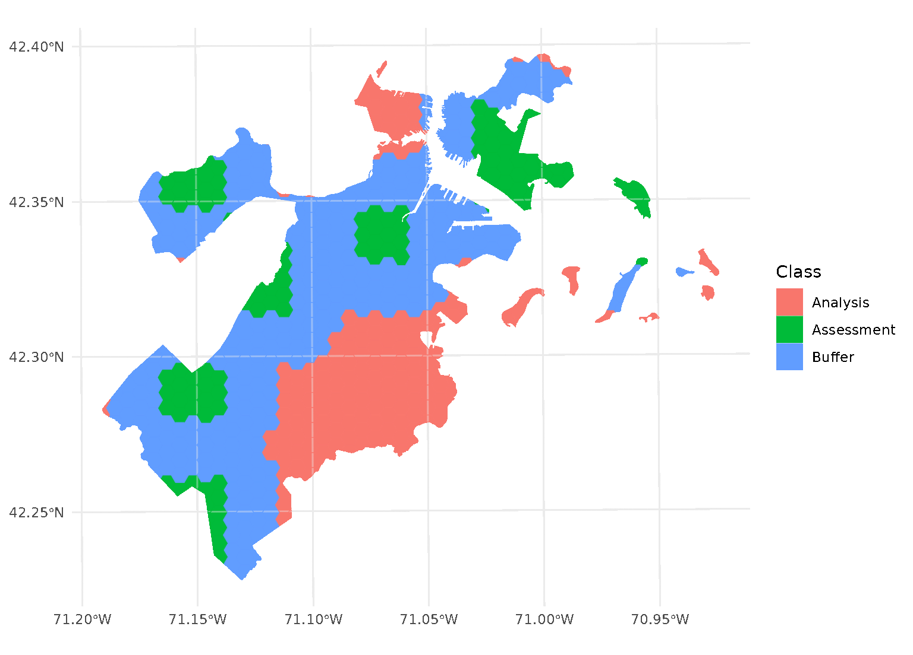
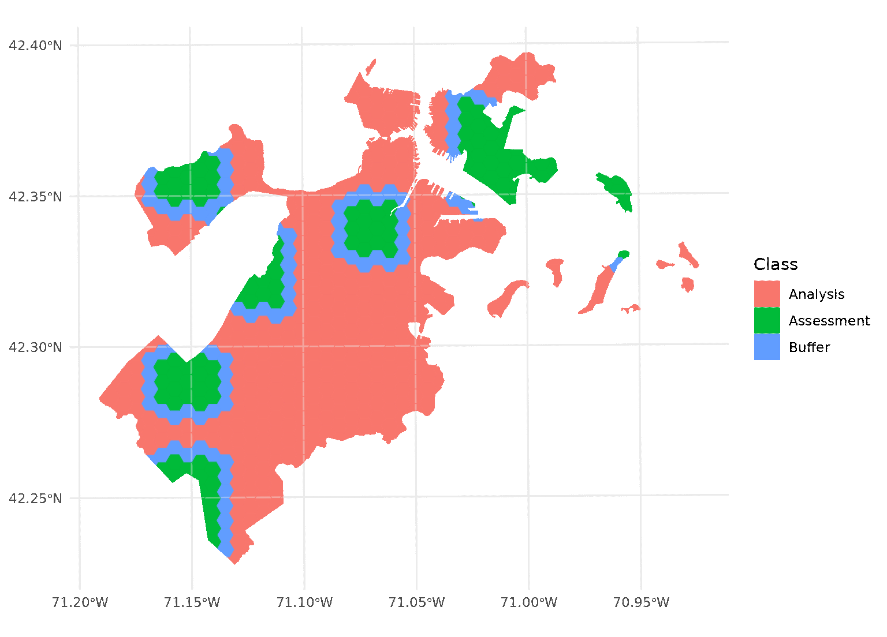
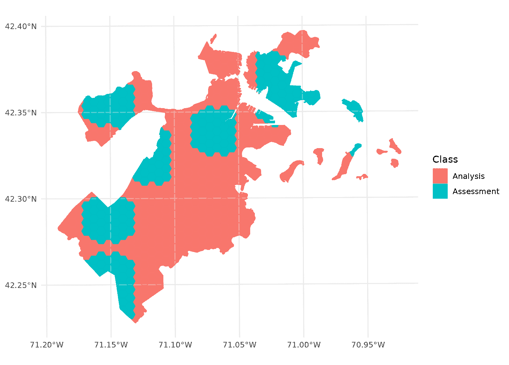
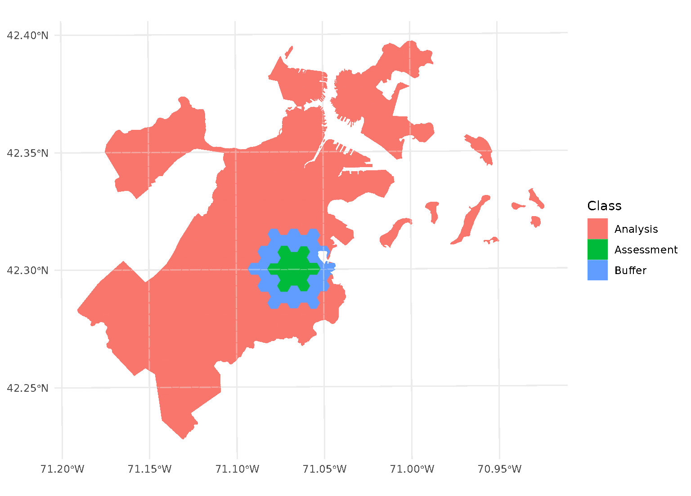
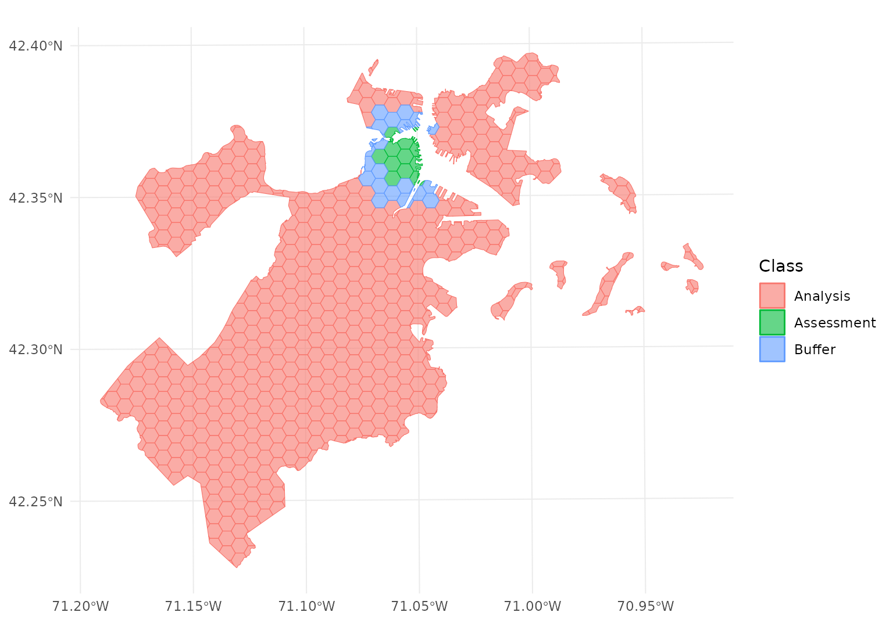

The goal of spatialsample is to provide functions and classes for spatial resampling to use with rsample. Keeping the data used to train a spatial model (what we call a training or analysis set) separate from the data used to evaluate that model (what we call a testing or assessment set) provides a more realistic view of how well it will perform when extrapolating to new locations.
When resampling spatial data, we often want to introduce some distance between analysis and assessment data; one of the most common methods for introducing this distance is to “buffer” the assessment set, removing all points within a given distance from the analysis set to enforce a minimum space between data sets. This vignette walks through how to buffer your assessment folds with spatialsample, as well as some considerations about how those buffers are calculated.
To begin, let’s load spatialsample:
Exclusion buffers
By default, most spatial cross-validation methods in spatialsample don’t automatically create buffer zones. Take for instance spatial_block_cv(), which creates a number of “blocks” in a grid and assigns data to folds based on the block its centroid falls in:
set.seed(123)
blocks <- spatial_block_cv(boston_canopy, v = 5)
autoplot(blocks)
If we look at the individual folds, we can see that the assessment data directly borders the analysis data for each given fold:

This is a downside of standard blocking cross-validation approaches; while it does introduce some spatial separation between the analysis and assessment sets for data at the middle of the block, data towards the edges may not be separated at all.
Applying an exclusion buffer around each assessment fold lets us change that. To create these exclusion buffers while using any cross-validation function in spatialsample, we can use a standardized buffer argument:
set.seed(123)
blocks <- spatial_block_cv(boston_canopy, v = 5, buffer = 1500)Now when we plot the folds separately, we can see that a strip of data around each assessment block has been assigned to neither the analysis or assessment fold. Instead, it’s been removed entirely in order to provide some distance between the two sets:

By default, buffer is assumed to be in the same units as your data, as determined by the data’s coordinate reference system. To apply buffers of other units, use the units package to explicitly specify what units your buffer is in.
For instance, boston_canopy uses units of US feet for distance. To specify a buffer in meters instead, we can use:
set.seed(123)
blocks <- spatial_block_cv(
boston_canopy,
v = 5,
buffer = units::as_units(1500, "m")
)
purrr::walk(blocks$splits, function(x) print(autoplot(x)))
Note that, when you’re using non-point data, the distance between observations is calculated as the shortest distance between any points in two observations. For instance, buffers on polygon data will exclude data based on the edge-to-edge distance between observations, rather than centroid to centroid.
One special case, however, is when buffer is set to 0. In this case, spatialsample won’t apply a buffer at all. While polygons that share an edge are within 0 distance of each other, when calculated from edge-to-edge, we think that setting buffer = 0 would intuitively apply zero (that is, no) buffer. If you want to be sure to only capture adjacent polygons in a buffer, set buffer to a tiny, non-zero value:
set.seed(123)
blocks <- spatial_block_cv(
boston_canopy,
v = 5,
buffer = 2e-200
)
purrr::walk(blocks$splits, function(x) print(autoplot(x)))
Inclusion radii
In addition to exclusion buffers, spatialsample also provides a way to add an inclusion buffer (or as we call it, an “inclusion radius”) around your assessment set. Simply set the radius argument in any spatial cross-validation function to your desired distance, and any data within that inclusion radius will be added to the assessment set:
set.seed(123)
blocks <- spatial_block_cv(
boston_canopy,
v = 5,
radius = 2e-200
)
purrr::walk(blocks$splits, function(x) print(autoplot(x)))
This argument is handled the same way as buffer, with the same caveats:
- Unless units are specified explicitly,
radiusis assumed to be in the same units as your data’s coordinate reference system. - Distances are calculated between the closest parts of observations.
- Values of zero do not apply a radius.
Both radius and buffer can be specified at the same time. This makes it possible to implement, for instance, leave-one-disc-out cross-validation using spatialsample:
set.seed(123)
blocks <- spatial_buffer_vfold_cv(
boston_canopy,
v = nrow(boston_canopy),
radius = 1500,
buffer = 1500
)
purrr::walk(blocks$splits, function(x) print(autoplot(x)))
When both radius and buffer are specified, spatialsample first applies the inclusion radius to the original randomly-selected assessment set, adding any data within the radius to the assessment set. Next, the exclusion buffer is applied to all the points in the new (post-radius) assessment set, removing any data within the buffer from the analysis set.
Note that this means that buffer is not simply applying a “doughnut” around the circular “radius”, but is buffering each test point separately. See for instance the non-uniform buffer region that happens when there’s a gap in the data:
autoplot(blocks$splits[[12]])
This leaves more data in your analysis set for fitting the model, while still ensuring your assessment data is spatially removed.